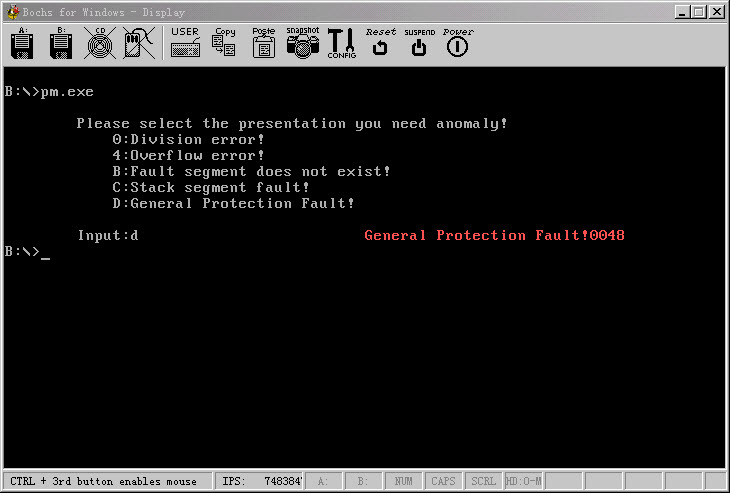

保护模式8:各种中断的演示
文章目录
呵呵前一篇我们已经明白了保护模式下如何进行中断处理,但是并没有比较理性的了解, 那么这篇我们还应该再演示演示
中断处理的实际情况..
上一篇我们的中断处理处理了实模式和保护模式之间不同的中断向量问题, 这篇我没有做这个工作了, 主要是演示演示中断的处理,发生了中断, 代表程序发生了错误, 是可以修复的..
这个代码没有加新的知识, 只是将上一篇的中断处理进行了扩展,还是用了任务门. 比较暴力..我主要说说代码的逻辑功能.
首先为进入保护模式需要做的初始化工作全做了, 然后跳到保护模式下的临时代码段, 这个代码段, 用于作为缓存地带是用, 从实模式跳入保护模式, 也从保护模式回到实模式. 因为无法从32位代码段回到实模式, 所以有一个这样的缓冲段是非常必要的..
进入保护模式以后, 初始化临时任务自己的LDTR因为我们准备使用任务门进入中断处理, 返回的时候需要使用LDTR, 初始化化好临时任务的LDTR, 然后给读取键盘的中断任务, 设置好所有需要的东西, 包括CS:EIPSS:ESP, LDTR, OK一切搞定, 然后调用int 0ffh号中断, 这号中断使用的不是中断门,也不是陷阱门, 而是任务门, 那么造成任务切换, 切换到了ReadKeyCodeSeg这个段.这个段, 和以前的惯例不太一样, 以前我一般只使用一个16位段, 作为缓冲段, 不过这里ReadKeyCodeSeg也是16位段, 因为为了读取按键, 又从保护模式跳回了实模式, 读取到按键的时候再跳回保护模式.
关于这个保护模式和实模式之间的切换我想应该多锻炼, 这样可以对CPU的各个模式有更深的了解, 接着说代码的逻辑, 从实模式读取到键盘以后, 把键盘放到缓冲区段中, 然后又跳回保护模式, 然后中断返回..
中断返回以后那么我们可以肯定已经读取到用户的输入了, 而且是合法的, 不合法不会返回, 必须是0, 4, B, C, D. 对应相应的中断号.
读取到用户的输入的时候就开始模拟相应的异常, 对于0和4号异常, 一个是除法错误, 一个是溢出错误, 只需要简单的把引起错误的寄存器修改回去就可以了.. 也没有错误码, B, C, D这几号中断, 有异常码, 所以在中断处理中显示了异常码, 然后根据当前的指令长度调整EIP, 调整到下一条指令. 这样程序得以正常的执行.
这个代码是有点长了, 不过没有关系, 新知识并没有多. 知识对于已学的知识一个新的应用. 写这个代码的时候我也遇到很多异常, 倒腾了两天, 需要耐心, 耐心够了没有什么是搞不定的!
和前几篇一样, 有图有真相,还是要说一下, 所有的代码都是在MASM9下面写的, MicroSoft最新的assembly编译器. 在VS2008里面COPY过来的,link的话就是网上那个MASM32包里面的, 直接用就可以..
http://www.joenchen.com/JoenTools/Interrupt.rar

;============================================================================ ;演示保护模式下异常和中断的演示 ;MASM9 + LINK5 ;编译选项请参见 makefile TAB = 8 ;============================================================================ .686p Include pm.inc option casemap:none Stack_Len equ 1024 ;堆栈大小 ;============================================================================ GdtSeg Segment use32 ;全局描述符
; ;段基址 ;段界限 ;属性 Dummy: Descriptor 0, 0, 0 ;空的描述符
Normal: Descriptor 0, 0ffffh, DA_DRW ;规范段描述符 g_CodeTempDesc: Descriptor 0, 0ffffh, DA_C ;非一致代码 g_DataDesc: Descriptor 0, 0fffffh, DA_DRWG ;全局4G数据段 g_VideoDesc: Descriptor 0b8000h,0ffffh, DA_DRW ;全局视频操作段 g_IdtCode32Desc: Descriptor 0, IdtCode32SegLen-1, DA_CR or DA_32 ;中断处理函数描述符 g_CodeReadKeyDesc: Descriptor 0, ReadKeyTssLen-1, DA_386TSS ;读取键盘任务TSS g_LdtDemoDesc: Descriptor 0, L_DemoLdtSegLen-1, DA_LDT ;局部描述符 g_LdtReadKeyDesc: Descriptor 0, L_ReadKeySegLen-1, DA_LDT ;读取键盘的LDT描述符 g_DemoTssDesc: Descriptor 0, L_DemoTssSegLen-1, DA_386TSS ;Demo任务的TSS ;—————————————————————————- NormalSelector equ Normal - GdtSeg ;规范段选择子 g_DataSelector equ g_DataDesc - GdtSeg ;全局数据段 g_VideoSelector equ g_VideoDesc - GdtSeg ;全局视频段选择子 g_CodeTempSelector equ g_CodeTempDesc - GdtSeg ;代码段选择子 g_IdtCodeSelector equ g_IdtCode32Desc - GdtSeg ;中断处理函数描述符选择子 g_CodeReadKeySelector equ g_CodeReadKeyDesc - GdtSeg ;TSS选择子 g_LdtDemoSelector equ g_LdtDemoDesc - GdtSeg ;Demo的局部描述符段 g_LdtReadKeySelector equ g_LdtReadKeyDesc - GdtSeg ;读取键盘的LDT描述符选择子 g_DemoTssSelector equ g_DemoTssDesc - GdtSeg ;Demo任务的TSS选择子 ;—————————————————————————- GDTLen equ $ - GdtSeg ;GDT长度 GDT_Ptr word GDTLen-1 ;VGDT dword 0 _IDT_Ptr word IdtSegLen -1 ;IDT长度 dword 0 ;VIDT
_RegSp word ? ;用于保存SS:SP _RegSs word ? ;—————————————————————————- SzTitle byte 13,10, 9, "Please select the presentation you need anomaly!", 13, 10 byte 9, " 0:Division error!", 13, 10 byte 9, " 4:Overflow error!", 13, 10 byte 9, " B:Fault segment does not exist!", 13, 10 byte 9, " C:Stack segment fault!", 13, 10 byte 9, " D:General Protection Fault!", 13, 10,13, 10 byte 9, "Input:$" GdtSeg Ends ;============================================================================ IdtSeg Segment use32 ;中断描述符 ; 门 目标选择子, 偏移, DCount, 属性 Gate g_IdtCodeSelector, _IdtDiv, 0, DA_386IGate ;0h除法错误 repeat 3 Gate g_IdtCodeSelector, _IdtOther,0, DA_386IGate ;1h-3h陷阱门处理地址 endm Gate g_IdtCodeSelector, _IdtOf, 0, DA_386IGate ;4号异常处理(溢出) repeat 6 Gate g_IdtCodeSelector, _IdtOther,0, DA_386IGate ;5-0ah陷阱门处理地址 endm Gate g_IdtCodeSelector, _IdtNp, 0, DA_386IGate ;0bh号异常处理(段不存在故障) Gate g_IdtCodeSelector, _IdtSs, 0, DA_386IGate ;0ch号异常处理(堆栈段故障) Gate g_IdtCodeSelector, _IdtGp, 0, DA_386IGate ;0dh号异常处理(通用保护故障) repeat 240 Gate g_IdtCodeSelector, _IdtOther, 0, DA_386IGate ;0eh-0edh 240个中断处理地址 endm Gate g_IdtCodeSelector, _IdtShowMsg,0, DA_386IGate ;0feh号异常处理(显示中断)
Gate g\_CodeReadKeySelector, 0, 0, DA\_TaskGate ;0ffh号异常处理(键盘中断处理)任务门
IdtSegLen equ $ - IdtSeg ;IDT长度 IdtSeg Ends ;============================================================================ ReadKeyTss Segment use32 ;读取键盘TSS StReadKey TSS <0> byte 0ffh ReadKeyTssLen equ $ - ReadKeyTss ReadKeyTss Ends ;============================================================================ ReadKeyCodeSeg Segment use16 ;读取键盘的代码段 _GetKey equ $ - ReadKeyCodeSeg GetKey Proc far ;在实模式下读取键盘 local _Vidt:fword mov ax, GdtSeg mov ds, ax mov ebp, esp
mov ax, L\_DemoData
mov es, ax
lss sp, dword ptr ds:\[\_RegSp\] ;恢复SS:sp
lidt fword ptr ds:\[\_IDT\_Ptr\] ;恢复实模式中断
sti
lea dx, SzTitle ;字符串
mov ah, 9 ;功能号
int 21h ;调用DOS中断
;—————————————————————————- @@: mov ah, 0 int 16h ;读取键盘
push ax
mov dl, al
mov ah, 2
int 21h ;显示用户的按键
pop ax
.if al == '0' || al == '4' || al == 'b' || al == 'B' || \\
al == 'c' || al == 'C' || al == 'd' || al == 'D'
mov byte ptr es:\[SzAsciiBuf\], al
jmp @f
.Endif
jmp @b
@@: ;—————————————————————————- ;还原IDT,回到保护模式 cli mov word ptr ss:[_Vidt], IdtSegLen ;IDT长度 mov eax, IdtSeg shl eax, 4 mov dword ptr ss:[_Vidt+2], eax lidt fword ptr ss:[_Vidt] ;装载IDT
mov eax, cr0
or al, 1
mov cr0, eax ;开启分页进入保护模式
Jmp16 <L\_ReadKeyCodeSelector>, <\_ReadKeyEnd> ;跳回保护模式
;—————————————————————————- GetKey Endp ;—————————————————————————- _ReadKeyBegin equ $ - ReadKeyCodeSeg ;读取键盘的入口 ReadKeyBegin Proc push ds push es push fs push gs
mov ax, NormalSelector
mov ss, ax
mov ds, ax
mov eax, cr0
and al, 11111110b
mov cr0, eax ;先转实模式
Jmp16 <seg ReadKeyCodeSeg>, < \_GetKey >
ReadKeyBegin Endp ;—————————————————————————- _ReadKeyEnd equ $ - ReadKeyCodeSeg ReadKeyEnd Proc ;读取键盘完成了 mov ax, L_ReadKeyStackSelector mov ss, ax mov esp, ebp ;恢复ss:esp pop gs pop fs pop es pop ds iretd ReadKeyEnd Endp ReadKeyCodeSegLen equ $ - ReadKeyCodeSeg ReadKeyCodeSeg Ends ;============================================================================ LdtSeg Segment use32 ;局部描述符
LdtSegLen equ $ - LdtSeg LdtSeg Ends ;============================================================================ IdtCodeSeg Segment use32 ;中断处理函数地址 _IdtDiv equ $ - IdtCodeSeg IdtDiv Proc ;除法错误 lea esi, SzDivMsg mov ecx, sizeof SzDivMsg int 0feh ;中断嵌中断 mov ax, 10h ;简单处理除法异常 mov cl, 2h iretd IdtDiv Endp ;—————————————————————————- _IdtOf equ $ - IdtCodeSeg ;溢出错误 IdtOf Proc lea esi, SzOverMsg mov ecx, sizeof SzDivMsg int 0feh ;显示溢出错误字符串 iretd IdtOf Endp ;—————————————————————————- ;;将al中的数字转成ASCII加上显示属性并在EAX中返回 _HexToAscii Proc uses ebx
mov bl, al
and al, 0fh
add al, 90h
daa
adc al, 40h
daa
mov ah, 0ch
shl eax, 16 ;转换低位
mov al, bl
shr al, 4
and al, 0fh
add al, 90h
daa
adc al, 40h ;将高位转成ASCII
daa
mov ah, 0ch ;属性
ret
_HexToAscii Endp ;============================================================================ _ShowErrorCode Proc _dwErrorCode ;显示出错码
mov eax, \_dwErrorCode
mov edx, eax
shr eax, 16
call \_HexToAscii ;显示段不存在故障错误码
stosd
mov eax, edx
call \_HexToAscii
stosd
ret
_ShowErrorCode Endp ;—————————————————————————- _IdtNp equ $ - IdtCodeSeg IdtNp Proc ;段不存在故障
lea esi, SzSegFaultMsg
mov ecx, sizeof SzSegFaultMsg
int 0feh
pop eax
Invoke \_ShowErrorCode,eax ;显示出错码
pop eax
add eax, 2 ;调整返回地址+2
push eax
iretd
IdtNp Endp ;—————————————————————————- _IdtSs equ $ - IdtCodeSeg IdtSs Proc ;堆栈段故障
lea esi, SzStackFaultMsg
mov ecx, sizeof SzStackFaultMsg
int 0feh
pop eax
Invoke \_ShowErrorCode, eax ;显示出错码
pop eax
add eax, 4 ;调整返回地址+4
push eax
iretd
IdtSs Endp ;—————————————————————————- _IdtGp equ $ - IdtCodeSeg IdtGp Proc ;通用保护故障
lea esi, SzGeneralMsg
mov ecx, sizeof SzGeneralMsg
int 0feh
pop eax
Invoke \_ShowErrorCode, eax ;显示出错码
pop eax
add eax, 2 ;调整返回地址+2
push eax
iretd
IdtGp Endp ;—————————————————————————- _IdtShowMsg equ $ - IdtCodeSeg ;—————————————————————————- ;显示字符串中断 esi–>字符串地址 ;ecx :字符串长度 ;ds 数据段 es:视频输出段 ;—————————————————————————- IdtShowMsg Proc
mov edi, (80 \* 2 \* 10 ) +( 40 \* 2 ) ;20行10列
cld
@@: lodsb mov ah, 0ch stosw loop @b iretd IdtShowMsg Endp ;—————————————————————————- _IdtOther equ $ - IdtCodeSeg IdtOther Proc ;其他类型的错误
lea esi, SzOtherMsg
mov edi, (80 \* 2 \* 20 ) +( 10 \* 2 ) ;20行10列
mov ecx, sizeof SzOtherMsg
@@: lodsb mov ah, 0ch stosw loop @b iretd IdtOther Endp IdtCode32SegLen equ $ - IdtCodeSeg IdtCodeSeg Ends ;============================================================================ ;============================================================================ L_DemoTssSeg Segment use32 ;演示任务的TSS StDemoTss TSS <0> byte 0ffh L_DemoTssSegLen equ $ - L_DemoTssSeg L_DemoTssSeg Ends ;============================================================================ L_DemoStack Segment use32 ;演示任务的堆栈 byte Stack_Len dup (0) L_DemoStack Ends ;============================================================================ L_ReadKeyStack Segment use32 ;读取键盘任务的堆栈 byte Stack_Len dup (0) L_ReadKeyStack Ends ;============================================================================ L_DemoData Segment use32 ;演示任务的数据段 SzDivMsg byte "Division Error!" SzOverMsg byte "Overflow Error!" SzSegFaultMsg byte "Fault segment Error Code: 0x" SzStackFaultMsg byte "Stack segment fault!" SzGeneralMsg byte "General Protection Fault!" SzOtherMsg byte "Such a thing can not happen!"
SzAsciiBuf byte 0 L_DemoDataLen equ $ - L_DemoData L_DemoData Ends ;============================================================================ L_DemoLdtSeg Segment use32 ;演示任务段的描述符 ; ;段基址 ;段界限 ;属性 L_DemoTssAliasDesc: Descriptor 0, L_DemoTssSegLen-1, DA_DRW ;TSS别名段 L_DemoStackDesc: Descriptor 0, Stack_Len-1, DA_DRWA ;堆栈段 L_DemoDataDesc: Descriptor 0, L_DemoDataLen-1, DA_DRW ;数据段 L_DemoNpDesc: Descriptor 0, 0ffffh, DA_DRW -80h ;模拟段不存在的描述符 ;—————————————————————————- L_DemoTssAliasSelector equ L_DemoTssAliasDesc - L_DemoLdtSeg + SA_TIL ;TSS别名段选择子 L_DemoStackSelector equ L_DemoStackDesc - L_DemoLdtSeg + SA_TIL ;堆栈段选择子 L_DemoDataSelector equ L_DemoDataDesc - L_DemoLdtSeg + SA_TIL ;数据段选择子 L_DemoNpSelector equ L_DemoNpDesc - L_DemoLdtSeg + SA_TIL ;模拟段不存在的选择子
L_DemoLdtSegLen equ $ - L_DemoLdtSeg L_DemoLdtSeg Ends ;============================================================================ L_ReadKeySeg Segment use32 ;读取键盘的LDT L_ReadKeyStackDesc: Descriptor 0, Stack_Len-1, DA_DRWA ;堆栈段 L_ReadKeyCodeDesc: Descriptor 0, 0ffffh, DA_CR ;代码段 ;—————————————————————————- L_ReadKeyStackSelector equ L_ReadKeyStackDesc - L_ReadKeySeg + SA_TIL ;堆栈段选择子 L_ReadKeyCodeSelector equ L_ReadKeyCodeDesc - L_ReadKeySeg + SA_TIL ;代码段 L_ReadKeySegLen equ $ - L_ReadKeySeg L_ReadKeySeg Ends ;============================================================================ ;16位段, 由实模式跳入 ;============================================================================ g_Code16Seg Segment use16 _GoToProtect Proc ;返回实模式 mov ax, NormalSelector mov fs, ax ;规范选择子 mov es, ax mov ds, ax mov ss, ax mov gs, ax clts ;清除任务标记
mov eax, cr0 ;关PE位, 进入实模式
and al, 0feh
mov cr0, eax
;刷新段选择子缓冲区, 退回实模式
Jmp16 <seg StartCodeSeg >, < offset \_RealProtect >
_GoToProtect Endp ;—————————————————————————- _ProtectEntry Proc ;实模式跳入入口
mov ax, g\_LdtDemoSelector
lldt ax ;装载LDTR
mov ax, L\_DemoStackSelector
mov ss, ax
mov esp, Stack\_Len ;置SS:ESP
mov ax, L\_DemoTssAliasSelector
mov gs, ax ;TSS别名段
mov word ptr gs:\[TSS.regLdtr\], g\_LdtDemoSelector
;—————————————————————————- ;初始化读取键盘的TSS段 mov ax, g_DataSelector mov fs, ax
xor ebx, ebx
mov bx, ReadKeyTss
shl ebx, 4 ;fs:ebx-->ReadKeyTss
mov word ptr fs:\[ebx+TSS.regEip\], \_ReadKeyBegin
mov dword ptr fs:\[ebx+TSS.regEsp\], Stack\_Len
mov word ptr fs:\[ebx+TSS.regLdtr\], g\_LdtReadKeySelector
mov word ptr fs:\[ebx+TSS.regSs\], L\_ReadKeyStackSelector
mov word ptr fs:\[ebx+TSS.regCs\], L\_ReadKeyCodeSelector
;—————————————————————————- mov ax, g_DemoTssSelector ltr ax
mov ax, L\_DemoDataSelector
mov ds, ax ;装载数据段
mov ax, g\_VideoSelector
mov es, ax ;视频段
int 0ffh ;调用0ffh号中断获取按键
;—————————————————————————- ;已经得到用户输入的异常, 现在需要做的就是根据输入演示异常 mov ax, L_DemoDataSelector mov ds, ax mov al, byte ptr ds:[SzAsciiBuf] cld
.if al == '0' ;模拟除法溢出
mov ax, 2000h
mov cl, 2
div cl ;除数存不下,异常
;—————————————————————————- .Elseif al == '4' ;模拟溢出异常 mov al, 9ch ;-100 add al, 9ch ;-100 into ;—————————————————————————- .Elseif al == 'b' || al == 'B' ;模拟段不存在异常 mov ax, L_DemoNpSelector ;此段没有初始化, 会异常 mov gs, ax ;—————————————————————————- .Elseif al == 'c' || al == 'C' ;堆栈出错异常 mov ebp, esp mov al, byte ptr [ebp] ;—————————————————————————- .Elseif al == 'd' || al == 'D' ;模拟通用保护异常 mov ax, g_DemoTssSelector mov gs, ax ;段是不能够装入TSS的, 异常 .Endif ;—————————————————————————- call _GoToProtect ;返回保护模式 _ProtectEntry Endp g_Code16Seg Ends ;============================================================================ ;起始代码段初始化保护模式的各个结构, 然后跳入保护模式 ;============================================================================ StartCodeSeg Segment use16 _InitGdt Proc uses es ;初始化全局描述符表
xor eax, eax
mov ax, GdtSeg
mov es, ax ;es-->全局描述符表
;—————————————————————————- shl eax, 4 mov dword ptr es:[GDT_Ptr+2], eax ;初始化VGDT描述符 ;—————————————————————————- xor eax, eax mov ax, g_Code16Seg ;初始化十六位的代码段 shl eax, 4 mov word ptr es:[g_CodeTempDesc+2], ax ;段基址低位 shr eax, 16 mov byte ptr es:[g_CodeTempDesc+4], al ;段基址高地址低位 mov byte ptr es:[g_CodeTempDesc+7], ah ;段基址高地址高位 ;—————————————————————————- xor eax, eax mov ax, IdtCodeSeg ;初始化中断处理函数地址 shl eax, 4 mov word ptr es:[g_IdtCode32Desc+2], ax shr eax, 16 mov byte ptr es:[g_IdtCode32Desc+4], al mov byte ptr es:[g_IdtCode32Desc+7], ah ;—————————————————————————- xor eax, eax mov ax, L_DemoLdtSeg ;Demo任务的LDT段 shl eax, 4 mov word ptr es:[g_LdtDemoDesc+2], ax shr eax, 16 mov byte ptr es:[g_LdtDemoDesc+4], al mov byte ptr es:[g_LdtDemoDesc+7], ah ;—————————————————————————- xor eax, eax mov ax, L_ReadKeySeg ;读取键盘任务的LDT shl eax, 4 mov word ptr es:[g_LdtReadKeyDesc+2], ax shr eax, 16 mov byte ptr es:[g_LdtReadKeyDesc+4], al mov byte ptr es:[g_LdtReadKeyDesc+7], ah ;—————————————————————————- xor eax, eax mov ax, L_DemoTssSeg ;Demo任务的TSS段 shl eax, 4 mov word ptr es:[g_DemoTssDesc+2], ax shr eax, 16 mov byte ptr es:[g_DemoTssDesc+4], al mov byte ptr es:[g_DemoTssDesc+7], ah ;—————————————————————————- xor eax, eax mov ax, ReadKeyTss ;读取任务的中断任务 shl eax, 4 mov word ptr es:[g_CodeReadKeyDesc+2], ax shr eax, 16 mov byte ptr es:[g_CodeReadKeyDesc+4], al mov byte ptr es:[g_CodeReadKeyDesc+7], ah ;—————————————————————————- lgdt fword ptr es:[GDT_Ptr] ;装载GDT ret _InitGdt Endp ;—————————————————————————- _InitDemoLdt Proc uses ds
mov ax, L\_DemoLdtSeg
mov ds, ax
;—————————————————————————- xor eax, eax mov ax, L_DemoTssSeg ;初始化DemoTSS别名段 shl eax, 4 mov word ptr ds:[L_DemoTssAliasDesc+2], ax shr eax, 16 mov byte ptr ds:[L_DemoTssAliasDesc+4], al mov byte ptr ds:[L_DemoTssAliasDesc+7], ah ;—————————————————————————- xor eax, eax mov ax, L_DemoStack ;初始化Demo堆栈段 shl eax, 4 mov word ptr ds:[L_DemoStackDesc+2], ax shr eax, 16 mov byte ptr ds:[L_DemoStackDesc+4], al mov byte ptr ds:[L_DemoStackDesc+7], ah ;—————————————————————————- xor eax, eax mov ax, L_DemoData ;初始化Demo堆栈段 shl eax, 4 mov word ptr ds:[L_DemoDataDesc+2], ax shr eax, 16 mov byte ptr ds:[L_DemoDataDesc+4], al mov byte ptr ds:[L_DemoDataDesc+7], ah ;—————————————————————————- ret _InitDemoLdt Endp ;—————————————————————————- _InitReadKeyLdt Proc uses ds ;初始化读取键盘的LDT mov ax, L_ReadKeySeg mov ds, ax ;—————————————————————————- xor eax, eax mov ax, L_ReadKeyStack ;初始化读取键盘任务的堆栈 shl eax, 4 mov word ptr ds:[L_ReadKeyStackDesc+2], ax shr eax, 16 mov byte ptr ds:[L_ReadKeyStackDesc+4], al mov byte ptr ds:[L_ReadKeyStackDesc+7], ah ;—————————————————————————- xor eax, eax mov ax, ReadKeyCodeSeg ;初始化读取键盘任务的代码段 shl eax, 4 mov word ptr ds:[L_ReadKeyCodeDesc+2], ax shr eax, 16 mov byte ptr ds:[L_ReadKeyCodeDesc+4], al mov byte ptr ds:[L_ReadKeyCodeDesc+7], ah ;—————————————————————————- ret _InitReadKeyLdt Endp ;—————————————————————————- _InitIdt Proc uses es ;初始化IDT local _Vidt:fword
xor eax, eax
mov ax, GdtSeg
mov es, ax ;es-->全局描述符表
sidt fword ptr es:\[\_IDT\_Ptr\] ;保存IDT
mov word ptr ss:\[\_Vidt\], IdtSegLen ;IDT长度
mov eax, IdtSeg
shl eax, 4
mov dword ptr ss:\[\_Vidt+2\], eax
cli ;关中断
lidt fword ptr ss:\[\_Vidt\] ;装载IDT
ret
_InitIdt Endp ;—————————————————————————- Jmain Proc
call \_InitGdt ;初始化GDT全局描述符
call \_InitIdt ;初始化IDT中断描述符
call \_InitDemoLdt ;初始化Demo LDT局部描述符
call \_InitReadKeyLdt ;初始化中断读取键盘的 LDT局部描述符
;—————————————————————————- mov ax, GdtSeg mov ds, ax
mov ds:\[\_RegSs\], ss
mov ds:\[\_RegSp\], sp ;保存SS:SP
\_EnableA20 ;关中断开A20地址线
mov eax, cr0
or eax, 1
mov cr0, eax ;开启分段, 进入保护模式
;—————————————————————————- Jmp16 g_CodeTempSelector, <offset _ProtectEntry>;跳入保护模式
Jmain Endp ;—————————————————————————- _RealProtect Proc ;返回保护模式
mov ax, GdtSeg
mov ds, ax
lss sp, dword ptr ds:\[\_RegSp\] ;恢复SS:SP
lidt fword ptr ds:\[\_IDT\_Ptr\] ;恢复IDT
\_DisableA20 ;关A20地址线, 开中断
sti
mov ax, 4c00h
int 21h
_RealProtect Endp StartCodeSeg Ends
End Jmain
文章作者 忆杰
上次更新 2011-09-24